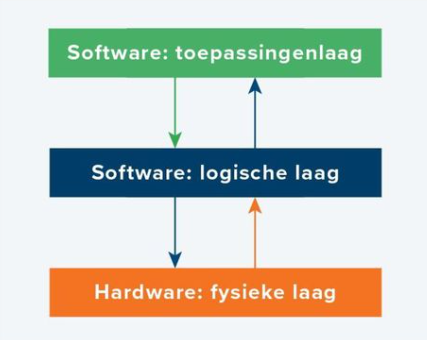

Het drie-lagenmodel is heel belangrijk voor computernetwerken en communicatie. Door de ingewikkelde technieken juist in drie verschillende simpele lagen te scheiden kunnen we goed doorhebben hoe apparaten in een netwerk met elkaar communiceren. Het zijn namelijk de fysieke laag, de toepassingslaag en de logische laag die samen dus het drie-lagenmodel vormen. In het kort gaat de fysieke laag vooral over de hardware, de toepassingslaag over het besturingssysteem (Android of IOS) en de logische laag over de apps, bijvoorbeeld op je mobiele telefoon, zoals Snapchat, Instagram en Facebook bijvoorbeeld.
